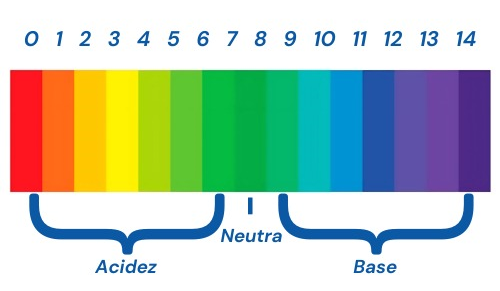

Ácidos
São substâncias químicas que possuem a capacidade de doar íons H⁺ (íons de hidrogênio) em solução aquosa, ou seja, são substâncias que possuem pH abaixo de 7. Essa capacidade de doar H⁺ é conhecida como acidez e pode ser medida pela escala de pH.
Características
- Incolor
- Forte odor e asfixiante;
- Sabor azedo, ácido ou amargo;
- PH inferior a 7;
- Estado físico líquido;
- Baixo ponto de fusão e ebulição;
- Conduzem eletricidade em meio aquoso;
- Reagem com metais (ferro, magnésio e zinco).

Classificação dos Ácidos
Orgânico ou inorgânico
Os ácidos orgânicos são compostos que contêm átomos de carbono ligados a um grupo funcional ácido, e podem ser encontrados na natureza ou sintetizados em laboratório. Os ácidos inorgânicos são substâncias impróprias para o consumo humano.
Força ácida
A força do ácido é medida pela facilidade com que ele se ioniza em água e outros solventes. Os ácidos fortes liberam íons H+ com maior facilidade. A classificação dos ácidos de acordo com a força ácida é:
- Forte: α ≥ 50%
- Moderado: 5% ≤ α ≤ 50%
- Fraco: 5% ≤ α
Quantidade de hidrogênios ionizáveis
A classificação dos ácidos de acordo com a quantidade de hidrogênios ionizáveis é:
- Monoácido: Apresenta um hidrogênio ionizável.
- Diácido: Apresenta dois hidrogênio ionizável.
- Triácido: Apresenta três hidrogênio ionizável.
- Tetrácido: Apresenta quatro hidrogênio ionizável.
Nomenclatura
A nomenclatura dos ácidos varia de acordo com um fator importante, se possuem ou não Oxigênio na sua fórmula, podendo assim serem divididos entre Hidrácidos e Oxiácidos.
Oxiácidos: Possuem Oxigênio em sua fórmula. A nomenclatura de oxiácidos varia de acordo com o número de oxidação (NOX) do elemento central.
| NOX do elemento central | Nomenclatura do ácido | ||
|---|---|---|---|
| prefixo- | -infixo- | -sufixo | |
| +1 e +2 | Hipo- | -nome do ânion- | -oso |
| +3 e +4 | -- | Nome do ânion- | -oso |
| +5 e +6 | -- | Nome do ânion- | -ico |
| +7 | Per | -nome do ânion- | -ico |
Hidrácidos: Não possuem Oxigênio em sua fórmula.
"Ácido + nome do ânion + ídrico"
Para todos os ácidos, usa-se o termo “ácido” antes da nomenclatura que caracteriza a molécula. Nos hidrácidos, troca-se o sufixo “eto” do nome do elemento pelo “ídrico”.
Exemplos do Dia a Dia
- Ácido Clorídrico (Água Sanitária): Usado em soluções diluídas para limpar banheiros, remover ferrugem e manchas difíceis.
- Ácido Fosfórico: Usado na produção de fertilizantes, refrigerantes, geleias, chocolates, açúcar refinado, molho de salada, óleo vegetal, detergentes e rações para animais;
- Ácido Sulfúrico: Essencial nas baterias de carros, onde é utilizado para conduzir eletricidade e iniciar o processo de reação química que gera energia;
- Ácido Acético: Componente do vinagre, tempero indispensável na cozinha;
- Ácido Carbônico: Presente nas águas e refrigerantes gaseificados.
- Ácido Cítrico: Também conhecido como citrato de hidrogênio, que pode ser encontrado em frutas cítricas como o limão e a laranja.